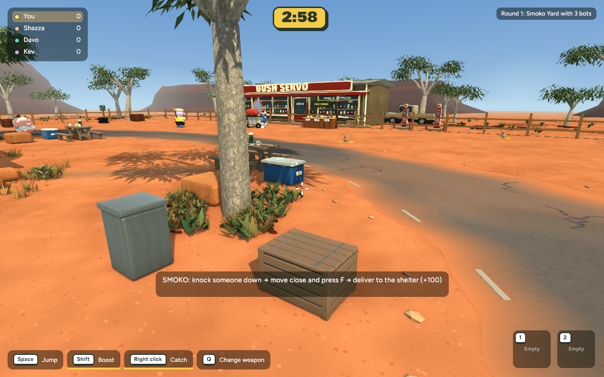
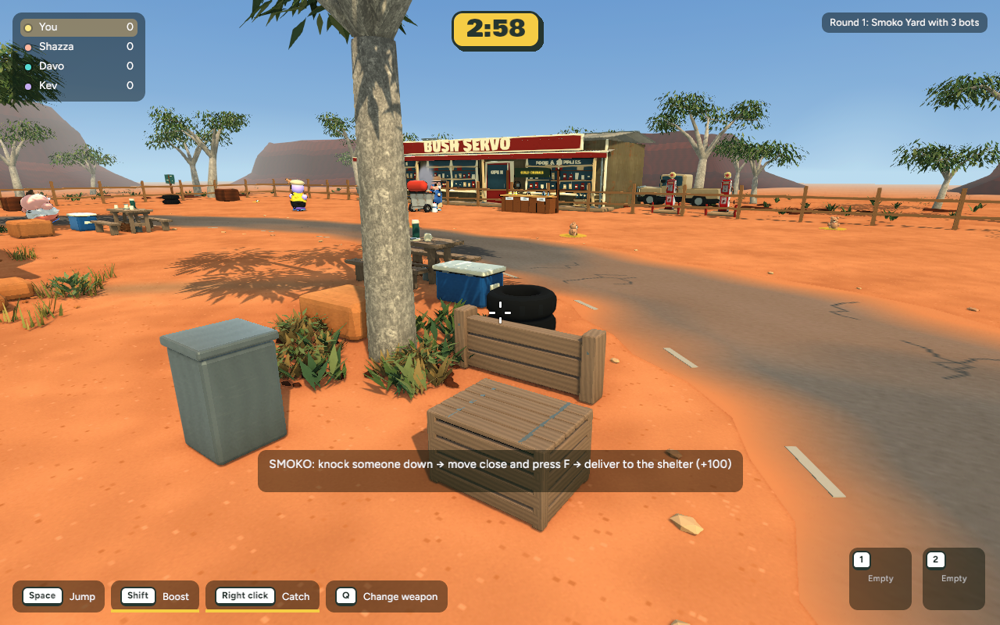
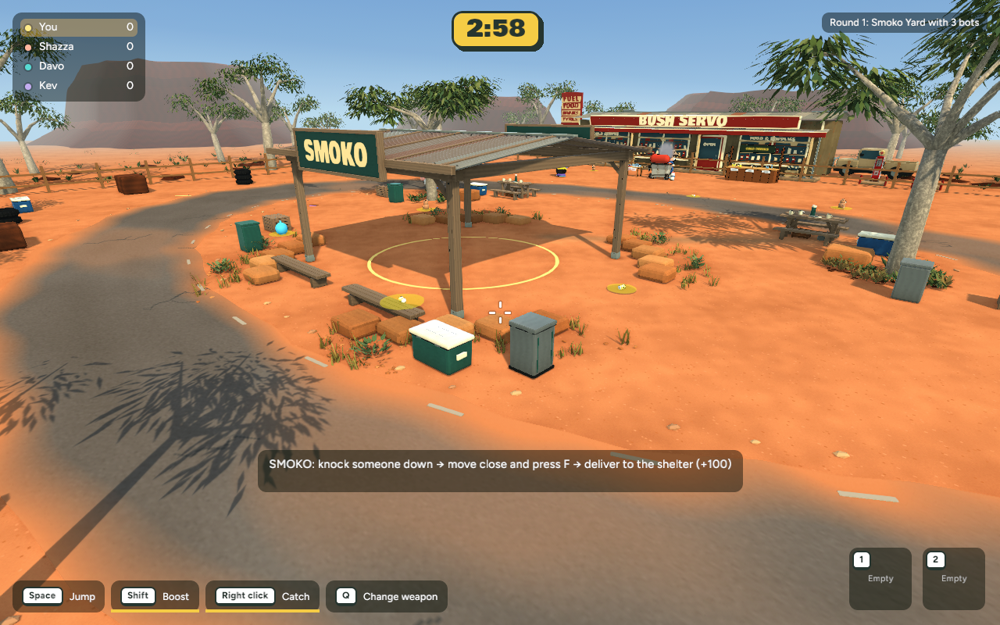
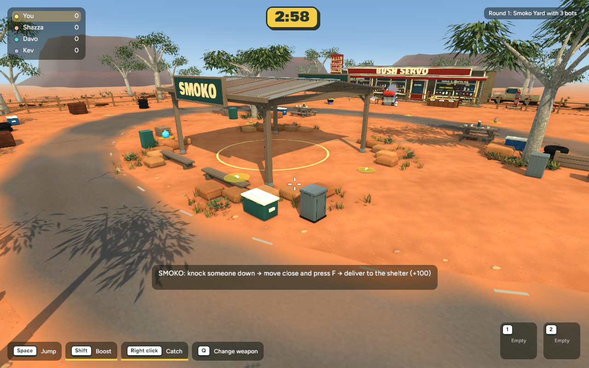
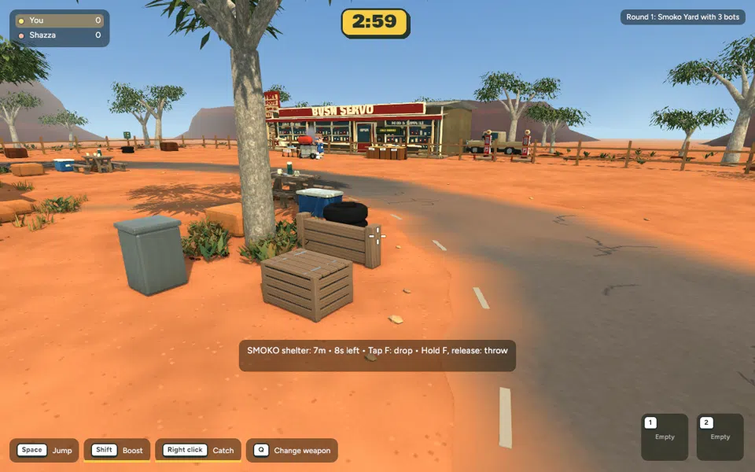
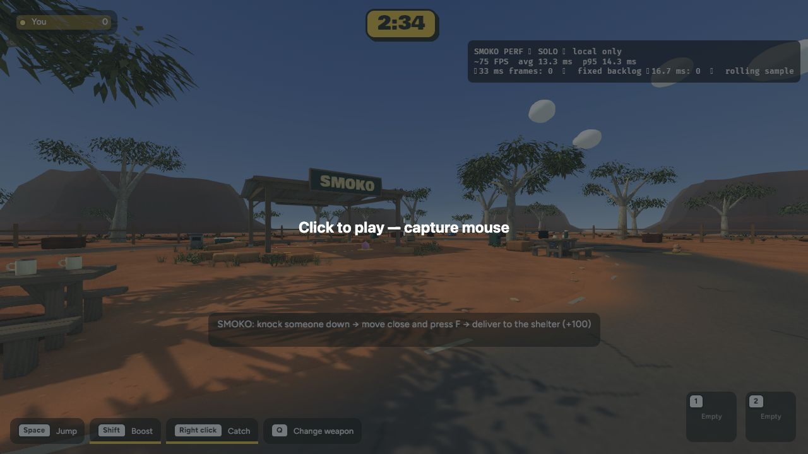
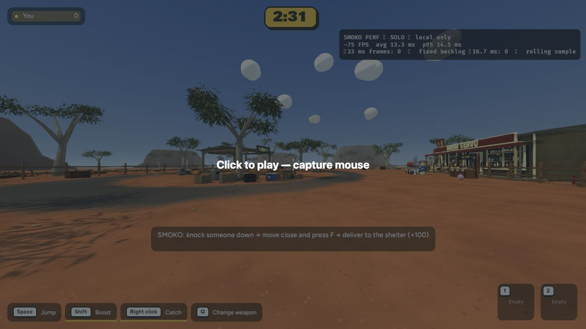

Actual implemented game ·7 November2026· Ready for review, not published.
Two worn tyres and a low timber barrier beside the eastern gum. Existing materials reused, shared collision added, roads and carrying lanes clear.





692 tests passed; native and browser builds passed. Original props preserved. +2,892 triangles, +139 KB; no new textures or material batches.
| close | 8.382 / 10.771 | 8.732 / 11.007 | | gameplay | 8.690 / 11.085 | 8.690 / 10.794 |
Columns: view, before mean/p95 ms, after mean/p95 ms. See checkpoint for methods and limits.

